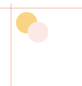

ABOUT ME


屋代 美紅 Miku Yashiro
1999年9月14日生まれ。慶應義塾女子高校を卒業し、慶應義塾大学経済学部に在学中。
小、中学校では地元、我孫子でのびのびと過ごし、６年間続けた卓球では中高ともに部長
として部をまとめた。高校では演劇に夢中になり、大学でも演出、脚本、照明、衣装、小道具、広報など
様々な角度から演劇に携わる。イラストやデザイン、Webデザインを猛勉強中。
skills
GameCreate | WebDesign | Design
HTML | CSS | JQuery | JavaScript | C# |
AdobeIllustrator | AdobePhotoshop | AdobeAfterEffect | AdobePremierePro
bio
2016年1月~2018年1月
2018年2月〜現在
2019年8月〜現在
ブックマルシェ我孫子店にて、書店のレジ業務、品出しを行った。
市進学院我孫子教室にて、個別指導講師として小中高生に文系、理系の
指導を行っている。また、受付業務も行っている。
Life is Tech!にてメンターとしてUnityとWebデザインを中高生に教え
ている。
WORKS
ここにモーダルウィンドウで表示したいコンテンツを入れます。モーダルウィンドウを閉じる場合は下の「閉じる」をクリックするか、背景の黒い部分をクリックしても閉じることができます。ここにモーダルウィンドウで表示したいコンテンツを入れます。モーダルウィンドウを閉じる場合は下の「閉じる」をクリックするか、背景の黒い部分をクリックしても閉じることができます。ここにモーダルウィンドウで表示したいコンテンツを入れます。モーダルウィンドウを閉じる場合は下の「閉じる」をクリックするか、背景の黒い部分をクリックしても閉じることができます。ここにモーダルウィンドウで表示したいコンテンツを入れます。モーダルウィンドウを閉じる場合は下の「閉じる」をクリックするか、背景の黒い部分をクリックしても閉じることができます。ここにモーダルウィンドウで表示したいコンテンツを入れます。モーダルウィンドウを閉じる場合は下の「閉じる」をクリックするか、背景の黒い部分をクリックしても閉じることができます。ここにモーダルウィンドウで表示したいコンテンツを入れます。モーダルウィンドウを閉じる場合は下の「閉じる」をクリックするか、背景の黒い部分をクリックしても閉じることができます。ここにモーダルウィンドウで表示したいコンテンツを入れます。モーダルウィンドウを閉じる場合は下の「閉じる」をクリックするか、背景の黒い部分をクリックしても閉じることができます。ここにモーダルウィンドウで表示したいコンテンツを入れます。モーダルウィンドウを閉じる場合は下の「閉じる」をクリックするか、背景の黒い部分をクリックしても閉じることができます。ここにモーダルウィンドウで表示したいコンテンツを入れます。モーダルウィンドウを閉じる場合は下の「閉じる」をクリックするか、背景の黒い部分をクリックしても閉じることができます。ここにモーダルウィンドウで表示したいコンテンツを入れます。モーダルウィンドウを閉じる場合は下の「閉じる」をクリックするか、背景の黒い部分をクリックしても閉じることができます。
閉じる「天空の龍」GAME
ここにモーダルウィンドウで表示したいコンテンツを入れます。モーダルウィンドウを閉じる場合は下の「閉じる」をクリックするか、背景の黒い部分をクリックしても閉じることができます。
閉じる「住みよい街、あびこ」Webサイト

ここにモーダルウィンドウで表示したいコンテンツを入れます。モーダルウィンドウを閉じる場合は下の「閉じる」をクリックするか、背景の黒い部分をクリックしても閉じることができます。
閉じる「メガネくんと仲間たち」LINEスタンプ
ここにモーダルウィンドウで表示したいコンテンツを入れます。モーダルウィンドウを閉じる場合は下の「閉じる」をクリックするか、背景の黒い部分をクリックしても閉じることができます。
閉じる演劇部公演チケット
ここにモーダルウィンドウで表示したいコンテンツを入れます。モーダルウィンドウを閉じる場合は下の「閉じる」をクリックするか、背景の黒い部分をクリックしても閉じることができます。
閉じる2019年年賀状イラスト


ここにモーダルウィンドウで表示したいコンテンツを入れます。モーダルウィンドウを閉じる場合は下の「閉じる」をクリックするか、背景の黒い部分をクリックしても閉じることができます。
閉じる「美女図鑑」 イラスト

ここにモーダルウィンドウで表示したいコンテンツを入れます。モーダルウィンドウを閉じる場合は下の「閉じる」をクリックするか、背景の黒い部分をクリックしても閉じることができます。
閉じる演劇サークル公演パンフレット